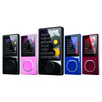
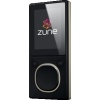
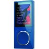
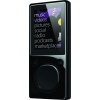
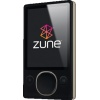
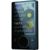

Zune Fact Sheet
Zune is your all-in-one personal, portable digital entertainment experience. Zune players, software and online services work together to bring your digital music to life.
By CESPage.com Zune, Published 13th September 2008
Zune portable media players. Super slim and ultraportable, Zune players come in a variety of sizes and colors ranging from 4 GB to 120 GB; Zune Pad touch controls (not available in 30GB size), a high-resolution colour screen, wireless capabilities and an FM tuner are included in every device. Tag songs from FM radio and use the built-in wireless feature to download music directly to your device, share music and pictures with friends, and wirelessly sync with your PC.
Zune software. Keep your music, video, photos and podcasts organised and easily accessible. Zune learns what you love and recommends music you will like and people who share your tastes. Even without a Zune device, the Zune software is a powerful, fun and free way to bring all your entertainment together on your Windows-powered PC.
Zune Marketplace online store. Editorial features including playlists, recommendations and custom channels help you explore more than 3.5 million songs, two-thirds of which are available as digital rights management (DRM)-free MP3s; 6,000 music videos; 2,000 TV shows; and more than 5,000 audio and video podcasts.
Zune Social online music community. Connect with like-minded fans and share music via the Zune Card, a real-time playlist of your favourite and recently played tracks that lives on the Web, in your Zune software and on your Zune device.
Feature Details
- Wireless browsing and buying on the fly. Purchase tracks from the Zune Marketplace store directly from your device when in a Wi-Fi hot spot or through a home wireless network.1 Zune has partnered with high-speed Internet access provider Wayport Inc. to allow customers to wirelessly connect to Zune Marketplace for free directly from their device at more than 9,500 McDonald's restaurants equipped with Wi-Fi Internet across the U.S. Browse new releases, view top songs and albums by genre, or use the on-screen keypad to type in your song of choice.
- Buying from FM radio. . Instantly tag and purchase songs you hear on FM radio stations directly from your Zune device by using the Buy from FM feature. If you are in a Wi-Fi hot spot, the song will immediately download to your Zune. If not, you will have a queue of songs ready to download when you connect to your home computer or get to a hot spot. Buy from FM works with radio stations that broadcast Radio Data System (RDS) or RT+ data.2
- Zune Pass. Explore music with the Zune Pass subscription, which gives you instant access to millions of available songs for about the price of a CD per month ($14.99). Download music from your PC or directly from your Zune.
- Custom channels. Subscribe to Zune Channels to get a variety of new music added to your collection each week automatically. Choose from channels programmed by music industry experts such as the Billboard Hot 100, magazines including The FADER, and radio stations such as KROQ in Los Angeles and KEXP in Seattle, or let Zune create custom channels just for you, based on your favorite artists and genres. Channels are free with a monthly Zune Pass,3 and you can also buy all the music as individual song downloads. Channels you subscribe to sync to your device music collection for playback on the go. You can even refresh Zune Channels from Wi-Fi hot spots.
- Personal Picks. Now when you log on to Zune Marketplace, you'll find a new area called Picks, where Zune will recommend artists, albums and tracks based on the music you have been listening to, as well as channels you might like and listeners like you in the Zune Social.
- Mixview. Select an artist, album or Zune Card to activate a dynamic, visual mosaic of related music and listeners. With each click, you can take the view in a new direction, creating a fun, graphical way to discover new music. Mixview works with your current collection of music, in addition to tracks and albums from across the Zune Marketplace.
- Audio books. To start listening to your favorite book on your Zune, visit audible.com to choose from 50,000 available titles or thousands of public library Web sites, to download and sync your favourites.
- Games on the go. Two free games - "Hexic" and "Texas Hold 'em" - will keep you entertained on the go. The bright, colour screen and touch-sensitive Zune Pad make playing games fun and easy.
- Zune Originals. Stand out from the crowd by ordering from the Zune Originals online store to customize your Zune player with laser-engraved art and personal text.
- Wireless sync. Cut the cord to your PC. Refresh your Zune with new content while you charge your device. Connect to your PC through your home wireless network by setting your Zune to automatically sync the latest podcasts, music and more from your stereo dock, AC adapter or speaker dock accessory.4
- Wireless Zune-to-Zune sharing.5 Share full-length tracks of your favourite songs, albums, playlists, pictures and even audio podcasts. Listen to the full track of any song you receive up to three times, and pass along songs you receive to other friends who have a Zune. If you like a song you receive, you can easily purchase it directly from your device through Zune Marketplace or add it to your wish list and buy it on your PC the next time you sync.
- Xbox 360 integration. Plug your Zune into your Xbox 360 and customize the soundtrack in supported games. You can also stream music, pictures and videos from the Zune software on your PC to your Xbox 360 console using a wireless connection.
- Recorded television content to go. The Zune software imports broadcast content recorded on Windows Media Center for Windows Vista Home Premium or Ultimate, so you can sync it onto your Zune and hit the road.6
- Accessories. A full line of Zune accessories is available to enhance your experience wherever you are - at home, on the go, working out or in the car.
| Device | Zune 4GB  |
Zune 8GB  |
Zune 16GB  |
Zune 80GB  |
Zune 120GB  |
|---|---|---|---|---|---|
| Song Capacity7 | 1,000 | 2,000 | 4,000 | 20,000 | 30,000 |
| Picture Capacity7 | 25,000 | 25,000 | 25,000 | 25,000 | 25,000 |
| Video Capacity7 | 12 Hours | 25 Hours | 50 Hours | 250 Hours | 375 Hours |
| Colour | Black | Black, Blue, Red, Pink | Glossy Black Front with Matte Black Back | Black | Glossy Black Front with Matte Black Back |
| Estimated Retail Price8 | $129.99 | $149.99 | $199.99 | $229.99 | $249.99 |
1 To search, purchase and download a track from Zune Marketplace directly from your device, you need to be in a Wi-Fi hot spot or connected to your home wireless network. If you are a Zune Pass subscriber, the song will automatically be added to your collection. If you are not a Zune Pass subscriber, the song will be added to the shopping cart; the next time Zune is synced with a PC, you will be asked to confirm the purchase.
2 To display station name and song information, stations must broadcast a Radio Broadcast Data Standards (RBDS) signal. Availability may vary. To activate the Buy from FM feature, click on the Zune Pad and select "buy" in the radio menu. If you are a Zune Pass subscriber, the track will automatically be added to your collection if in a Wi-Fi hot spot or connected to a home wireless network. If you are not a Zune Pass subscriber, the song will be added to the shopping cart; the next time Zune is synced with a PC, you will be asked to confirm the purchase.
3 DRM-free MP3s, videos, TV shows and some songs are not available via Zune Pass.
4 Wireless sync requires access to a home wireless network and can be initiated manually by clicking on "sync now" on the Zune. Automatic Wireless sync requires AC power to the Zune device via a dock, AC adapter or speaker dock accessory.
5 The Zune-to-Zune sharing feature may not be available for all songs on your device, and works only between Zune devices within wireless range of each other. This feature allows recipients to play full-length sample tracks up to three times.
6 Requires a PC running Windows Vista Home Premium or Windows Vista Ultimate and an integrated or external TV tuner. Available Zune Pass content may vary over time.
7 Music estimates are based on 128Kbps Windows Media Audio (WMA) files, with a length of four minutes each; pictures transferred to the Zune are optimized for Zune screen size. Video estimates are based on 500Kbps Windows Media Video (WMV) files with 128Kbps WMA audio tracks. Devices can hold up to the maximum amount of music, video or pictures.
8 Prices herein are estimated retail prices (ERP) and are in USD. Actual retail prices may vary.